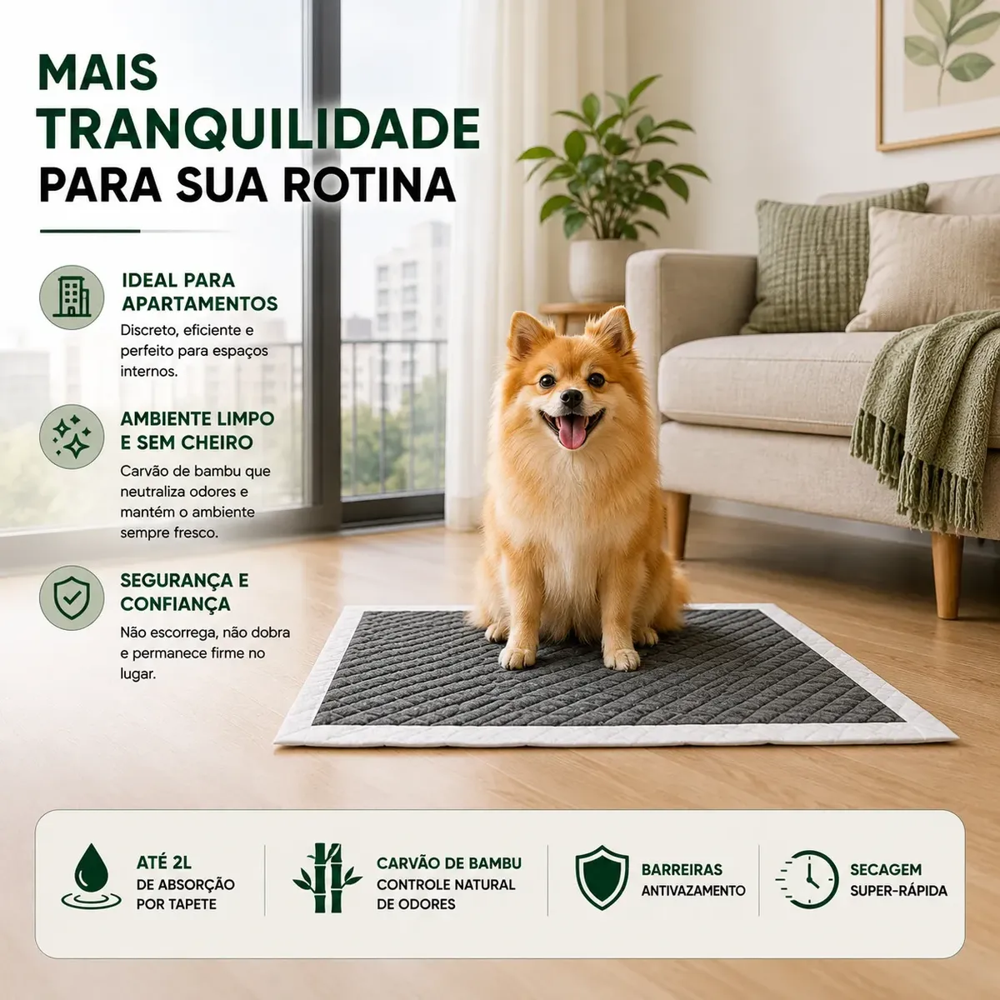
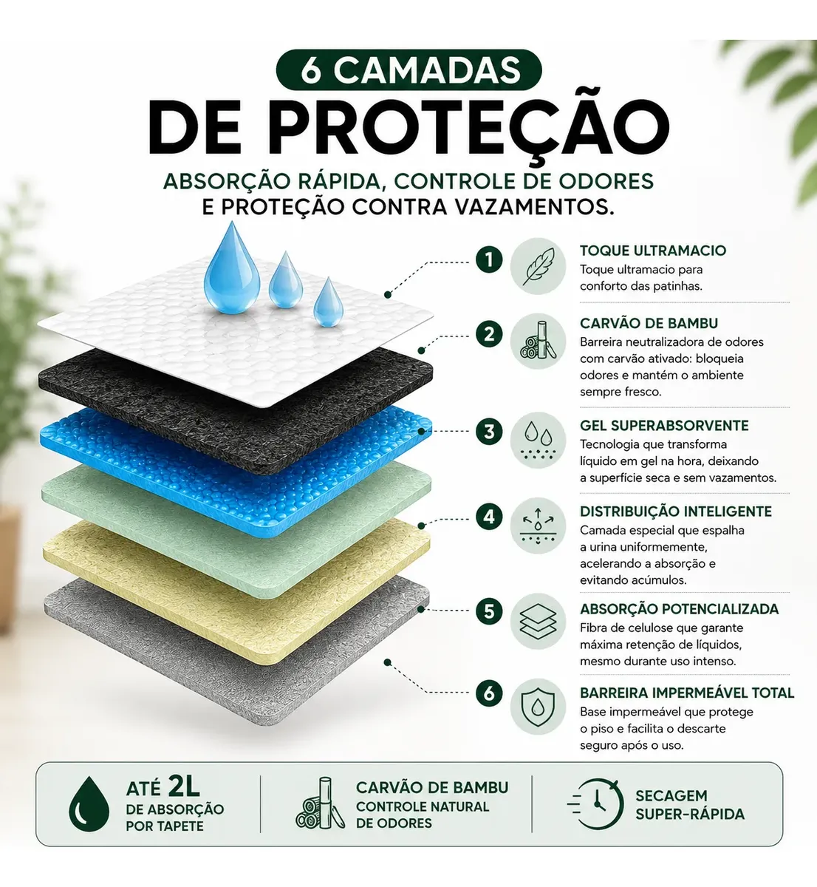
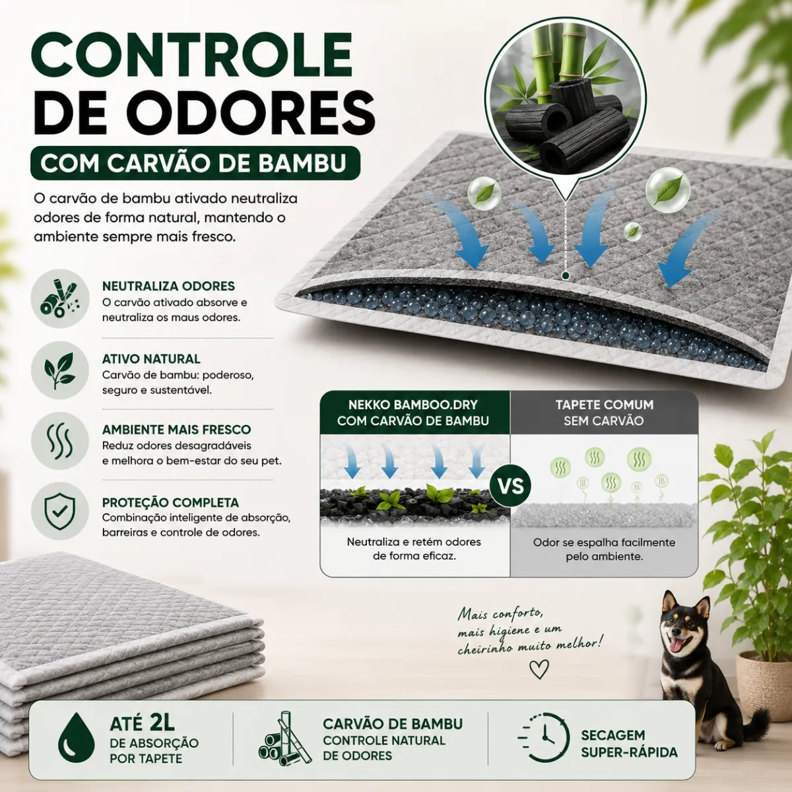
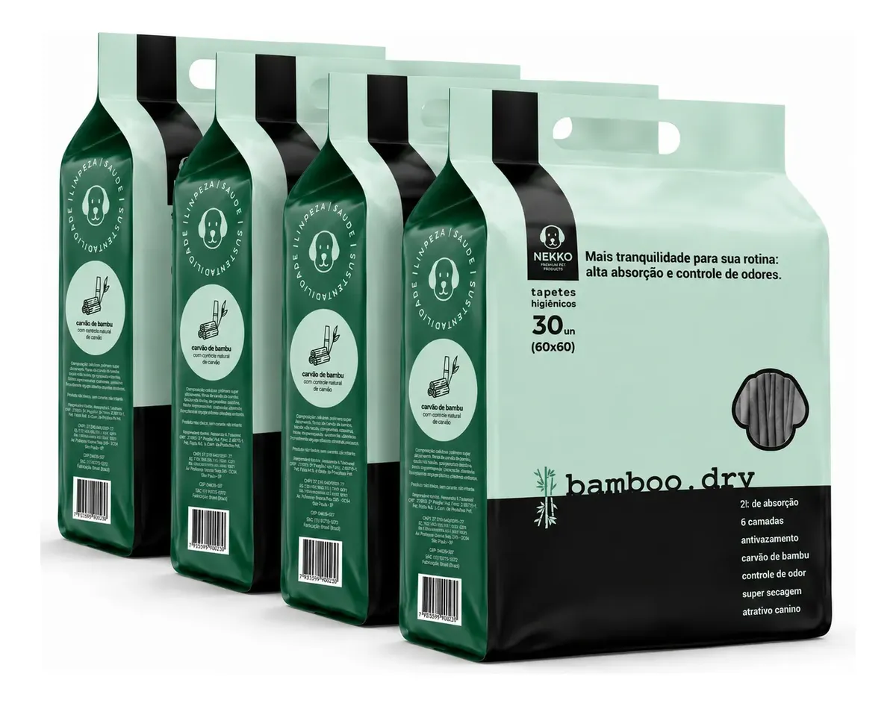

Quem mora em apartamento com cachorro conhece o dilema: sem quintal, o tapete higiênico para cachorro vira item essencial da rotina — mas nem todo tapete segura o xixi sem vazar, sem escorregar pelo chão, ou sem deixar cheiro no ambiente. Este review analisa o tapete higiênico premium Bamboo.dry, da Nekko, vendido em kit de 30 unidades (60x60 cm), a partir das fotos e especificações divulgadas pelo vendedor no Mercado Livre, cruzando com boas práticas de treinamento e dados sobre moradia no Brasil, para ajudar você a decidir se vale a pena.
Resumo rápido
- Segundo o Censo 2022 do IBGE, 12,5% da população brasileira mora em apartamento — no Sudeste essa proporção sobe para 16,7% (IBGE, Censo 2022), o que torna o tapete higiênico item de alta recorrência de compra para tutores urbanos.
- O setor pet brasileiro segue em expansão: faturamento de R$ 77,96 bilhões em 2025, com projeção de crescimento para 2026, segundo dados da Abinpet/IPB divulgados em release oficial da Câmara Setorial do Ministério da Agricultura (Gov.br, 2025).
- O modelo revisado promete até 2 litros de absorção por unidade, 6 camadas de proteção e carvão de bambu para controle de odor, segundo o anúncio do vendedor.
- Treinar o cão a usar o tapete corretamente costuma levar cerca de 15 dias de rotina consistente — o tapete certo ajuda, mas não substitui o treinamento.
8,2/10 — Boa opção para rotina em apartamento
Resumo em uma linha: Tapete espesso, com boa proposta de absorção e fixação antiderrapante, pensado especificamente para quem vive em espaço interno com o cão.
Ideal para: Tutores de cães pequenos e médios em apartamento, filhotes em treinamento, cães idosos com menos mobilidade.
Não ideal para: Cães de grande porte que urinam grande volume de uma vez (pode exigir mais de um tapete por uso).
Onde comprar: Mercado Livre, com frete e condições de pagamento variáveis por vendedor.
É um tapete higiênico cachorro descartável de 60x60 cm, vendido em kit com 30 unidades — um tapete higiênico pet pensado para uso diário, com camadas internas de absorção e uma superfície superior que promete manter-se seca ao toque mesmo após o uso. A proposta do fabricante é resolver três problemas comuns de tapetes higiênicos genéricos: vazamento pro chão, cheiro que se espalha pelo ambiente, e o tapete escorregando ou enrugando embaixo do cão.

Segundo o anúncio, a estrutura interna combina uma camada de gel superabsorvente (que transforma o líquido em gel na hora, reduzindo o contato do cão com a urina) com uma base impermeável, que funciona como barreira contra vazamento para o piso. Essa combinação de gel + base impermeável é a mesma lógica usada em fraldas e tapetes higiênicos de absorção mais alta no mercado — não é uma tecnologia exclusiva do produto, mas é um bom sinal de que a engenharia do produto segue um padrão testado.
O fabricante declara absorção de até 2 litros por tapete e um teste comparativo próprio mostrando secagem mais rápida frente a um "tapete comum sem carvão" — vale lembrar que esse é um teste divulgado pelo próprio vendedor, "realizado em condições controladas", e não um teste independente que verificamos. Ainda assim, a lógica por trás da promessa é sólida: carvão ativado (aqui, de bambu) é um material amplamente usado em produtos de higiene por sua capacidade de adsorver moléculas causadoras de odor, incluindo amônia presente na urina — pesquisa em engenharia química da UFRGS descreve o carvão ativado como sólido adsorvente eficiente na remoção de nitrogênio amoniacal de soluções (UFRGS, Lume).

Na prática, isso significa que o carvão de bambu ajuda a segurar o cheiro entre uma troca e outra, mas não é mágica: se o tapete ficar dias sem ser trocado, qualquer material de controle de odor perde eficácia. O disclosure aqui é importante — trate a promessa de "ambiente sempre fresco" como um efeito que depende também da sua rotina de troca, não só do produto.
Um dos pontos mais elogiados em avaliações de tapetes higiênicos em geral é a fixação — tapetes finos costumam enrugar ou escorregar quando o cão pisa, o que assusta filhotes em treinamento e atrapalha a mira. O Bamboo.dry Nekko usa adesivos de fixação nas bordas, prometendo manter o tapete firme no chão sem precisar de suporte adicional (diferente de modelos que exigem uma bandeja plástica por baixo).
Vídeo de divulgação do produto, publicado pelo vendedor no anúncio — não é um teste independente do Smart Pet Gadgets.
Isso reduz bastante a bagunça em apartamentos com piso liso (laminado, porcelanato), onde tapetes sem fixação tendem a "andar" pela casa ao longo do dia — um problema comum em qualquer tapete higiênico cachorro sem sistema de fixação nas bordas.
Nenhum tapete, por melhor que seja, substitui o treinamento. Segundo orientações de adestramento amplamente replicadas por especialistas em comportamento canino, o processo funciona melhor com estes passos:
Um tapete com boa fixação e boa absorção como o revisado aqui ajuda nesse processo porque reduz experiências negativas (susto com tapete que escorrega, cheiro forte que afasta o cão do local) que podem atrapalhar a associação positiva durante o treino.
Este tapete higiênico para cães faz mais sentido para tutores de cães pequenos e médios que vivem em apartamento — perfil que representa uma fatia relevante mas específica da população brasileira (dado citado acima). Também vale a pena para filhotes em fase de treinamento (mesmo em casa com quintal, até aprenderem a sinalizar vontade de sair) e para cães idosos ou com mobilidade reduzida, que se beneficiam de não precisar descer escadas ou esperar muito tempo entre saídas. Se a rotina de apartamento também pede uma solução melhor para a alimentação, veja também nosso review de comedouro para cachorro. Para cuidados de higiene além do banheiro do cão, também avaliamos um soprador pet de dois motores para secagem após o banho.
Para quem tem cão de grande porte, o cálculo muda: o volume urinado de uma vez pode superar a capacidade de absorção de um único tapete de 60x60, exigindo trocar mais de um por uso — o que aumenta o custo por dia de uso.
| Prós | Contras |
|---|---|
| Kit com 30 unidades reduz o custo por troca comparado a compras avulsas | Teste de secagem divulgado é do próprio fabricante, não é verificação independente |
| Fixação com adesivo evita que o tapete escorregue ou enrugue | Pode não ser suficiente sozinho para cães de grande porte com volume alto de urina |
| Carvão de bambu ajuda no controle de odor entre trocas | Eficácia do controle de odor cai se a troca for espaçada demais |
| Base impermeável protege o piso de vazamentos | Frete pode pesar no custo total dependendo da região |
| Formato 60x60 cobre bem a área de uso de cães pequenos/médios | Variações de qualidade entre vendedores — confira avaliações antes de comprar |

Esta análise foi construída a partir das fotos e especificações reais do anúncio do produto, comparadas com o que se sabe sobre a função de cada material (carvão ativado para odor, gel superabsorvente para retenção de líquido, base impermeável para vazamento) e com orientações de treinamento amplamente usadas por especialistas em comportamento canino. Não testamos o produto fisicamente nem confirmamos de forma independente as afirmações de absorção e secagem do fabricante — por isso, sinalizamos claramente quando uma informação vem só do vendedor. Recomendamos sempre conferir preço, disponibilidade e avaliações de outros compradores no próprio anúncio antes de fechar a compra. Veja nossa política editorial e de afiliados para entender como avaliamos e selecionamos produtos.
Para tutores de cães pequenos e médios em apartamento, filhotes em treinamento ou cães idosos com mobilidade reduzida, sim — a combinação de fixação antiderrapante, controle de odor com carvão de bambu e absorção declarada de até 2 litros por unidade cobre bem as principais dores de quem depende do tapete higiênico no dia a dia. Para cães de grande porte, vale considerar comprar mais de um tapete por uso ou buscar um modelo de dimensão maior.
🐾 Cansado de tapete higiênico que escorrega, vaza ou deixa cheiro no apartamento? O Bamboo.dry Nekko foi pensado justamente pra resolver isso — confira o preço atual e a disponibilidade do kit com 30 unidades antes que a promoção acabe.
Ver preço no Mercado Livre →Link de afiliado: podemos receber uma comissão por compras feitas através deste link, sem custo adicional para você.
Em média cerca de 15 dias de treino consistente, levando o cão ao tapete após acordar, comer e brincar, e reforçando positivamente cada acerto — sem broncas nos erros.
O carvão ativado é um material com boa capacidade de adsorção de odores, usado em diversos produtos de higiene pet. A eficácia real depende também da troca regular do tapete — carvão de bambu não substitui a troca frequente.
Serve bem para cães de pequeno e médio porte. Para cães grandes, pode ser necessário mais de um tapete por vez ou um tamanho maior, dependendo do volume urinado.
Para quem tem mais de um cão pequeno usando o mesmo tapete, ou quer trocar com menos frequência, uma capacidade de absorção maior reduz vazamentos e prolonga o tempo entre trocas.
O tapete higiênico Bamboo.dry Nekko entrega os três pontos que mais pesam na decisão de compra desse tipo de produto: fixação que não escorrega, absorção declarada alta e controle de odor com carvão de bambu. Nenhum tapete substitui o treinamento do cão, mas um tapete que não assusta o cão (por escorregar) e não acumula cheiro facilita bastante o processo. Vale conferir o anúncio atual para preço, frete e avaliações antes de decidir.
🐶 Facilite a rotina de higiene do seu cão em casa — confira agora o preço atual do kit com 30 tapetes no Mercado Livre.
Quero ver o tapete higiênico no Mercado Livre →Link de afiliado: podemos receber uma comissão por compras feitas através deste link, sem custo adicional para você.
Nildo Alves — curadoria de produtos pet no Smart Pet Gadgets. Testa e pesquisa produtos para cães e gatos, cruzando especificações de fabricante com boas práticas veterinárias e dados de mercado.
Sobre o Smart Pet Gadgets · Contato · Política editorial e de afiliados